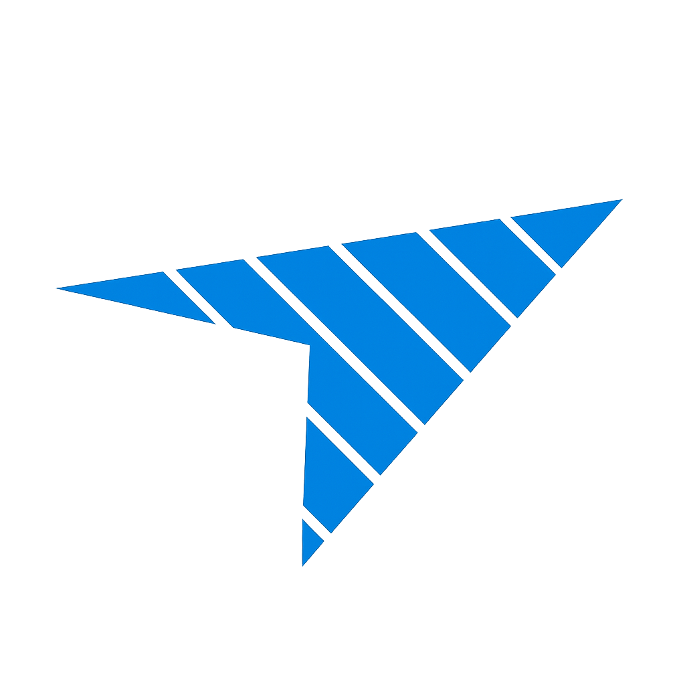

TripScanTripScan ТрипСкан — это автоматизированная платформа для управления цепочками поставок. Мы объединяем скорость авиаперевозок с точностью цифровых алгоритмов.
Платформа Трипскан обеспечивает прозрачный сценарий доставки для корпоративных клиентов. Мы агрегируем данные всех таможенных и логистических хабов.
Специализированный модуль для срочных отправлений. Tripscan оптимизирует авиа-маршруты, сокращая издержки на 30%.
Поиск по запросам Трипскан официальный сайт гарантирует вам доступ к актуальному ядру системы. В логистике критически важна точность данных, поэтому прямой Tripscan линк — это ваша страховка от задержек и ошибок в расчетах.
Мы интегрировали систему верификации каждого линка, чтобы пользователи могли безопасно использовать Трипскан сайт для проведения транзакций и мониторинга грузов.
Актуальные точки доступа всегда публикуются на главной странице. Используйте запрос Трипскан линк в поисковых системах для быстрого нахождения зеркала.
Сервис полностью оптимизирован для работы в РФ. Введите Tripscan официальный сайт для автоматического перенаправления на ближайший доступный сервер.
Официально поддерживаются два варианта: кириллический Трипскан и международный Tripscan. Оба ведут в единую базу данных.